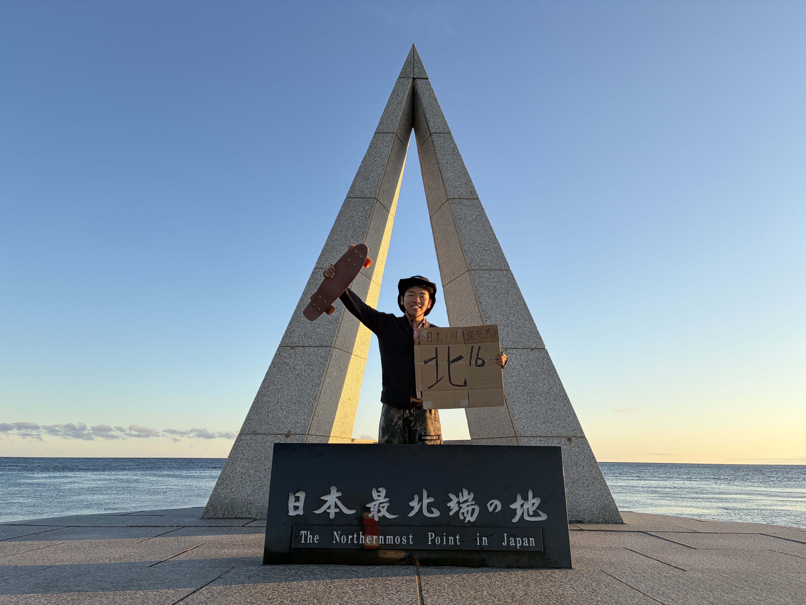

生の声
SNSには載せない本音、迷い、葛藤。その瞬間に感じたことを飾らず共有します。
高校生 × ヒッチハイク日本一周
この旅のゴールは、日本一周じゃありません。人と出会い、価値観に触れ、 今の僕にできる次の挑戦を見つけるための旅です。
旅のリアルはInstagramで更新中 @tabisururikki.62 フォローする ↗本プロジェクトは保護者の同意を得て実施しています。

JOURNEY SUPPORT
2026年8月31日まで
01 — WHY I TRAVEL
全国の知り合いに会う。知らなかった人と出会う。地域で暮らす人の声を聞く。 笑って、悩んで、ときには立ち止まりながら、自分の価値観を更新していく。
日本一周を「手段」にして、自分がどんな人間に変わるのか。 そして高校生の今だからこそできる次のアクションは何か。それを探し、記録する旅です。
02 — RIGHT NOW
すでに旅は始まっています。けれど、今のままでは旅を続けることが難しい状況です。 旅をしながら通常のアルバイトで資金をつくることも簡単ではありません。
だから、ただ「お金をください」とお願いするのではなく、 この旅を一緒につくり、変化の過程を見届けてくれる仲間を募集します。
“ 見る側から、
一緒につくる側へ。
03 — PLACES I’VE BEEN
訪問済み 37 都道府県。 色のついた場所には、それぞれ忘れられない出会いがあります。
地図を読み込んでいます…
現在地
訪問済み 37 都道府県
地図データ：国土地理院ウェブサイトをもとに作成された gmjpn21pref
GALLERY — ON THE ROAD
道の途中で出会った景色、人、瞬間。旅のリアルを、そのまま。
04 — BEHIND THE JOURNEY
SNSには載せない本音、迷い、葛藤。その瞬間に感じたことを飾らず共有します。
乗せてくれた人、旅先で出会った人。その言葉から何を受け取ったのかを残します。
旅の前と後で、何が変わったのか。次に何へ挑戦するのかまで届けます。
05 — CHOOSE YOUR SUPPORT
支援前にInstagramのユーザー名を入力してください。支援後のリターン連絡に使います。
STEP 0 — 必須
支援後にリターンをお届けするため、@ユーザー名が必要です。入力するまで支援ボタンは使えません。
✅ で登録しました。下のプランから支援できます。
↑ 先にInstagramユーザー名を入力してください
一食応援プラン
親しい友達プラン
毎日の思考日記プラン
人生の伴走者プラン
一緒につくるプレミアムプラン
内容・期間・実現可能性を事前に相談し、保護者確認のうえでお引き受けします。
06 — WHERE IT GOES
支援は、旅を安全に続け、新しい挑戦へ踏み出すために大切に使います。
※実際の状況に応じて配分を調整する場合があります。

07 — ABOUT ME
高校生ヒッチハイカー
日本一周をするためではなく、自分の知らない価値観と出会うために旅へ出ました。 全国で人の話を聞き、地域が抱える課題を自分の目で確かめながら、 高校生の今だからこそ起こせるアクションを探しています。
この旅を終えたとき、何を考え、次に何を始めるのか。 まだ答えはありません。だからこそ、その答えが生まれる瞬間まで見届けてもらえたら嬉しいです。
Instagramで旅を見る ↗08 — HOW TO SUPPORT
支援前に必ず @ユーザー名 を入力してください。
あなたに合う応援プランを選びます。
クレジットカード（Stripe）、またはPayPayのQRコード・リンクから送ります。
DMで「@ユーザー名 です、○○円支援しました」と送ってください。
Visa / Mastercard / JCB / Amex などに対応（Stripe）
または PayPay で支援
QRコードを読み取るか、ボタンから送金してください。支援後はInstagramのDMでお知らせください。
QRコードの有効期限が切れたら、新しい画像に差し替えてください。